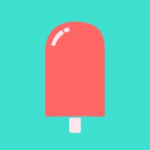

Watch the crowd.
Not the laptop.MIDI Auto-Tune control, a real setlist and live views for the whole band. For Ableton Live and, very soon, Logic Pro.
macOS 10.15+ · Intel & Apple Silicon · Ableton Live 11 & 12 · UAD Console · works offline
Everything happening on stage, in one window you can read from two metres away.
Your Apollo Auto-Tune, finally from Ableton.
UAD Console does not take MIDI for Auto-Tune. SEMPP is the bridge: one clip in Ableton and Auto-Tune obeys.
One clip changes the key.
Key on CC 21, scale on CC 22. When Ableton's playhead hits the clip, the key changes right on time, hands off the mouse.
Another sets scale and retune.
Retune, humanize, flex-tune and vibrato, with min, max and invert. Or with automation, note by note.
Bypass with a Program Change.
0 turns it on, 1 off, 2 toggles. And if someone touches it in Console, SEMPP knows.
16 channels. Several Auto-Tunes.
Each channel to a specific Auto-Tune, to IAC buses or both. MIDI Learn for the rest.
Five layers. Zero scrolling.
- 1Live barTransport, loop, click and reference, bar with beat and what's next.
- 2Status and tabsTUNE, ABLETON and SETLIST, the active Auto-Tune and Console, MIDI and Ableton status.
- 3Song and timersWhat's playing, time left, the whole show and when it ends.
- 4Song sectionsTappable, in time, with the current one filling up.
- 5Lyrics and textFrom any Ableton track, big and never cut off.
Every locator, a song.
SEMPP reads the Ableton Arrangement and builds the setlist for you, with each song's length and start time.
Drag. Your project stays untouched.
Reorder the show in seconds before you go on. Ableton stays the same.
One too many tonight? Out.
Hide it with the eye. Timers and the end time update instantly.
You decide how every song ends.
Follow the Arrangement, chain the next setlist song in time, or stop and cue it up.
Tap the chorus.
It lands on the bar.
While playing, the section comes in at Ableton's next quantize boundary, in time. When stopped, it is cued like a marker.
A screen for everyone.
Over the rack network, no internet and nothing to install: a browser is enough. You decide who can control and who just watches.


The vocal, watched.
The Auto-Tune input meter, on the Mac and on the tech's iPad: green, yellow from −12 dB, red from −3 dB. CLIP stays lit until you tap it, and if the vocal drops out while Ableton plays, you get a "no signal" alert.

Always on top. Never in the way.
A floating strip above everything, even full-screen Ableton: tune, key, scale, bar, loop and lyrics. Pick the opacity and click through it to keep working underneath.
Reliable by design.
The transport is tested against a "hostile" Ableton that does everything it shouldn't, before every release.
Ableton today.
Logic, very soon.
One licence for both. Auto-Tune control works with any DAW that sends MIDI.
SEMPP for Ableton Live 11 & 12
A control script reads locators, clips on the tracks you choose, loop, tempo and time signature, and follows the setlist's commands.
- Songs = Arrangement locators
- Sections and lyrics from clips on any track
- Previous and next with Ableton's native locators
- Respects your "stop and next marker" clips
- Click solo and reference mute from the Mac and the iPad
SEMPP MIDI CONTROL for Logic
The same system for Logic Pro 11: same live bar, same setlist, same iPad views. Join the waitlist and pick Logic to try it first.
- Unlimited songs, no dependence on Logic markers
- Songs and sections from named MIDI regions
- Follows the project's tempo and time signature changes
- Seamless jumps while playing, no gaps or clicks, both ways
- Click and reference by track name via a Mackie surface
Pay once.
Own it forever.
No subscription that can lapse mid-tour. Pick what you use and upgrade whenever you like.
MIDI
Your Apollo Auto-Tune under control, with any DAW.
€49one-time · VAT included
- Auto-Tune via CC and Program Change
- 16 channels and IAC buses, MIDI Learn
- Key on a piano and every scale
- Vocal meter
- Live view with tune
- Setlist, sections and iPad views
Full
For musical directors who run the whole show.
€149one-time · VAT included
- Everything in MIDI
- Everything in Setlist
- Vocal meter on the tech's iPad
- Full live view
- Ableton and Logic, same licence
Setlist
For bands playing with tracks, with or without an Apollo.
€99one-time · VAT included
- Setlist with follow, chain or stop
- In-time sections and reliable transport
- Timers, bar and what's next
- Click, Artist Ref and lyrics
- iPad views with PIN and permissions
- Auto-Tune control
🎉 Launch: 30% off for the first month for the waitlist. 14-day Full trial, no card needed.
One serial. No internet. No surprises.
- Try 14 days with everything unlockedNo card. Afterwards, what you don't own turns grey; nothing ever breaks.
- Buy and get your serialSecure checkout, VAT included. Your serial arrives by email instantly.
- Paste it in Settings → LicenceActivates on 2 Macs: your live rig and your home studio. Free one up whenever you like.
- Works offlineAfter activation the licence is checked on the Mac itself. No check ever interrupts a show.
Free 3.x updates · third activation €19 · prices include VAT.
What changes in your show
| Moment | Without SEMPP | With SEMPP |
|---|---|---|
| Key change | Clicking in Console between songs | A MIDI clip does it, right on time |
| Show order | Rearranging the Arrangement before every gig | Drag in the setlist; the project is untouched |
| End of song | Someone stops and cues the next one | Follow, chain in time, or stop and cue the next one |
| Repeat a section | Hunting for it on the laptop screen | Tap it on the iPad: it lands on the next bar |
| The band | Asking how long is left | Everyone with their view: song, section, bars and clock |
| The tech | Can't see the vocal input from their desk | Vocal meter and system alerts on their iPad |

"I built it because I needed it myself, every night, on stage."
I'm Miguel Sempere, guitarist, producer and musical director. I run the tracks and the vocal Auto-Tune from Ableton and a foot controller while I play. Every SEMPP feature is tested in rehearsals and real shows before it ships.
Be among the first
We'll email you when 3.0 is ready, with the 30% launch discount. No spam, unsubscribe anytime.
What people ask most
What do I need to use SEMPP MIDI CONTROL?
A Mac running macOS 10.15 or later (Intel or Apple Silicon) and Ableton Live 11 or 12. To control Auto-Tune, a Universal Audio Apollo interface with UAD Console and Auto-Tune loaded on a channel. The band's iPads, phones or computers only need a browser on the same network.
Can I use it without an Apollo or Auto-Tune?
Yes. The Setlist licence includes the setlist, sections, timers, Click and Artist Ref and the iPad views, and needs no Universal Audio hardware.
How much does it cost?
Three one-time licences, VAT included: MIDI €49, Setlist €99 and Full €149. Upgrade from Setlist to Full for €59 and from MIDI to Full for €99. There is a 5-Mac Tour / Office licence for €349 and 40% off for schools and conservatories.
Is it a subscription?
No. You pay once and it is yours. Version 3 updates are free; a future version 4 will be discounted for existing licence holders.
Is there a free trial?
Yes: 14 days of Full with everything unlocked and no card required. When it ends, the features you do not own turn grey; nothing breaks.
On how many Macs can I use it?
Each licence activates on 2 Macs, for example your live rig and your home studio. You can free one at any time, and a third activation costs €19.
Does it need internet on stage?
No. Everything runs locally on the rack router, iPad views included. After activation the licence is checked on the Mac itself, and internet is only used, if available, to look for updates.
How does it know my songs and their sections?
In Ableton it reads the Arrangement locators: each one is a song. Sections come from the clips of a track you choose in Settings. Nothing to import or export.
Does it change my project?
No. The setlist, order and modes live in SEMPP. It only moves the transport and, if you enable it, solos the click and mutes the reference vocal.
Which iPads or devices can I use?
Any iPad, iPhone, Android or computer with a browser, including older iPads. Each view opens from a QR code and there is no app to install.
Is it safe to have the controls on Wi-Fi?
You can set an access PIN, give each view (director, tech, band) its own permissions and lock every iPad from the Mac with one click.
Does it work with Logic Pro?
The Logic Pro 11 version is in development, with unlimited songs and seamless jumps. Your licence will cover both Ableton and Logic. MIDI Auto-Tune control already works with any DAW.
How is it different from other setlist apps like AbleSet?
SEMPP combines the setlist, in-time sections and band views with MIDI control of the Apollo's Auto-Tune and a vocal meter for the tech, in one app, and one licence covers both Ableton and Logic.
Is it made by Universal Audio, Antares, Ableton or Apple?
No. SEMPP MIDI CONTROL is an independent product made by Miguel Sempere, not affiliated with Universal Audio, Antares, Ableton or Apple.